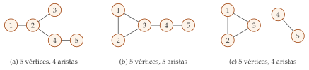
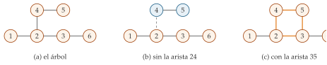
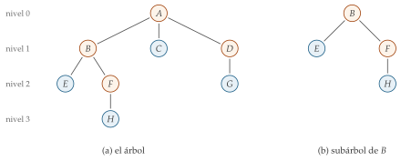
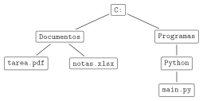
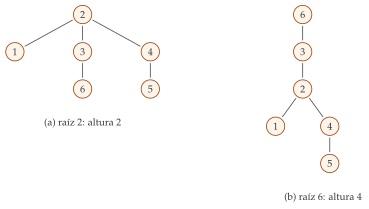
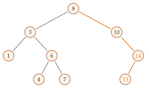
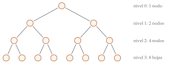
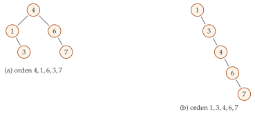
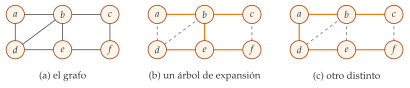

Árboles
decidir si un grafo es un árbol y usar aristas para contar;
leer un árbol con raíz: padre, hijos, hojas, nivel, altura y subárbol;
construir un árbol binario de búsqueda insertando una lista de números;
obtener un árbol de expansión de un grafo quitando aristas de sus ciclos.
En el capítulo anterior los grafos tenían caminos de sobra: entre dos vértices podía haber muchas rutas y circuitos por todas partes. Ahora vas al extremo contrario, el grafo que conecta todo con lo mínimo indispensable. Tiene esa forma un directorio de archivos, un organigrama, el árbol de decisiones de un programa o la red de cables más barata que une varias oficinas.
13.1 Qué es un árbol
Un árbol es un grafo conexo que no tiene ciclos.
Dos condiciones, y las dos pesan. Mira tres grafos de cinco vértices y decide cuál cumple ambas.
Decide si cada grafo de la figura es un árbol. Cuenta sus vértices y sus aristas.

Soluciónintenta primero
Revisa la conexidad.
(a) y (b) son conexos. (c) se parte en dos piezas, y .
Busca ciclos.
(a) no tiene ninguno. (b) y (c) contienen el triángulo .
Solo
- (a) es un árbol.
- (b) tiene un ciclo
- (c) tiene un ciclo y además no es conexo.
Fíjate en que (a) tiene aristas, una menos que vértices, y que (c), que también tiene , no es árbol. Esa cuenta es una herramienta, pero hay que usarla bien.
Tiene exactamente aristas.
Entre dos vértices cualesquiera hay un único camino sin repetir vértices.
Si quitas una arista cualquiera, el grafo se desconecta en dos árboles.
Si añades una arista entre dos vértices que ya estaban, aparece un ciclo.
Recíproco: un grafo conexo con vértices y aristas es un árbol.
Se cumple porque, si armas el árbol vértice a vértice, cada vértice nuevo entra con una sola arista; con dos, cerraría un ciclo.
Las dos operaciones, sobre un árbol de seis vértices, se ven así.

- (a) Una red conecta oficinas formando un árbol. ¿Cuántos cables tiene?
- (b) Un grafo conexo tiene vértices y aristas. ¿Cuántas aristas hay que quitar, como mínimo, para que sea un árbol?
- (c) Un árbol tiene aristas. ¿Cuántos vértices tiene?
Soluciónintenta primero
(a) Aplica .
cables.
(b) Un árbol de vértices tiene aristas.
Sobran . Se quitan de ciclos, para no desconectar el grafo.
(c) Despeja .
, luego .
- (a) cables.
- (b) aristas.
- (c) vértices.
Creer que un grafo con aristas ya es un árbol. El grafo (c) del primer ejemplo tiene vértices y aristas, y no lo es: tiene un ciclo y está partido en dos. La cuenta solo decide cuando además sabes que el grafo es conexo. Si no puedes asegurarlo, comprueba también que no hay ciclos.
13.2 Árboles con raíz
En un directorio de archivos hay una carpeta que está por encima de todas; en un organigrama, un jefe máximo. Elegir un vértice así convierte el árbol en una jerarquía.
Un árbol con raíz es un árbol en el que has elegido un vértice, la raíz. Se dibuja con la raíz arriba y el resto hacia abajo, y cada vértice se llama nodo.
Padre e hijo: si está justo encima de y los une una arista, es el padre de . Los hijos de un mismo padre son hermanos.
Hoja: nodo sin hijos. Nodo interno: nodo con al menos un hijo.
Nivel de un nodo: cuántas aristas lo separan de la raíz. La raíz está en el nivel .
Altura del árbol: el mayor nivel que alcanza un nodo.
Subárbol de un nodo: ese nodo con todos sus descendientes.
En el árbol con raíz de la figura, halla:
- (a) las hojas y los nodos internos
- (b) el padre, los hijos y los hermanos de
- (c) el nivel de y la altura del árbol
- (d) el subárbol de .

Soluciónintenta primero
(a) Hojas y nodos internos.
Las hojas son los nodos sin hijos: , , y . Los internos son los demás: , , y .
(b) Mira lo que hay justo encima y justo debajo de .
Su padre es , su único hijo es y su hermano es (también hijo de ).
(c) Cuenta aristas desde la raíz.
se alcanza por : tres aristas, nivel . Ningún nodo está más abajo, así que la altura es .
(d) Toma y todo lo que cuelga de él.
Son , , y , como en el panel (b).
- (a) Hojas ; internos .
- (b) Padre , hijo , hermano .
- (c) Nivel ; altura .
- (d) .
Los árboles con raíz están por todas partes en tu computador. En un sistema de archivos, las carpetas son nodos internos y los archivos son hojas; la ruta C:\Programas\Python\main.py es el único camino de la raíz a main.py.

C:. Hojas: tarea.pdf, notas.xlsx y main.py.Cualquier vértice de un árbol puede hacer de raíz, y el mismo árbol, enraizado en otro vértice, cambia de aspecto: otros padres, otros niveles y otra altura.

13.3 Árboles binarios y de búsqueda
Un árbol binario es un árbol con raíz en el que cada nodo tiene a lo sumo dos hijos, y cada hijo es el izquierdo o el derecho.
Con números dentro de los nodos se puede usar para buscar rápido.
Es un árbol binario con números distintos donde, en cada nodo, todo lo que hay a su izquierda es menor y todo lo que hay a su derecha es mayor.
El primer número de la lista es la raíz.
Cada número nuevo empieza en la raíz y se compara: si es menor, baja por la izquierda; si es mayor, por la derecha.
Repite la comparación en cada nodo hasta llegar a un lugar vacío. Ahí queda el número, como hoja.
Buscar un número sigue el mismo camino que seguiría al insertarlo.
Inserta en este orden los números en un árbol binario de búsqueda. ¿Cuál es su altura?

Soluciónintenta primero
Los dos primeros niveles.
El es la raíz. El es menor: va a su izquierda. El es mayor: va a su derecha.
Los tres siguientes.
El es menor que y menor que : queda a la izquierda del . El es menor que y mayor que : queda a la derecha del . El es mayor que y que : queda a la derecha del .
Los tres últimos bajan más.
El es menor que , mayor que y menor que : izquierda del . El es menor que , mayor que y mayor que : derecha del . El es mayor que y que , y menor que : izquierda del .
Mide.
El nodo más lejano de la raíz (, o ) está tres aristas abajo.
El árbol de la figura, de altura . Para buscar el basta pasar por , en vez de revisar los nueve números.
La forma del árbol depende del orden de la lista, no solo de los números. Con los mismos cinco números, un orden da un árbol bajo y otro una fila que no ayuda en nada.
Para compararlos hace falta una cuenta: cuánta gente cabe en un árbol binario.
Un árbol binario de altura tiene a lo sumo hojas y a lo sumo nodos. El máximo se alcanza cuando todos los niveles están llenos. Se cumple porque cada nivel puede tener, como mucho, el doble de nodos que el anterior.


En un árbol de búsqueda bien repartido, cada comparación te baja un nivel. Por la caja anterior, números caben en altura : bastan comparaciones para encontrar cualquiera. En una fila como la (b), en cambio, buscar el último de cinco números ya cuesta cinco comparaciones. Por eso importa el orden de inserción.
13.4 Árboles de expansión
Una empresa tiene seis sedes y varios cables posibles entre ellas. Quiere que todas queden comunicadas gastando lo menos posible: justo un árbol que las alcance a todas.
Un árbol de expansión de un grafo conexo es un subgrafo que es un árbol y que contiene todos los vértices del grafo.
Existe cuando el grafo es conexo.
Mientras quede un ciclo, quita una arista de ese ciclo.
Tendrá siempre aristas: si el grafo tiene , quitas .
Un grafo puede tener varios árboles de expansión distintos.
Quitar una arista de un ciclo no desconecta nada, porque el resto del ciclo sigue uniendo sus dos extremos.
El grafo de la figura tiene vértices y aristas. Halla un árbol de expansión.

Soluciónintenta primero
Cuenta cuántas aristas hay que quitar.
Un árbol de vértices tiene aristas, y el grafo tiene : hay que quitar , cada una de un ciclo distinto.
Rompe un ciclo con cada arista.
Quita , que rompe el triángulo . Queda el ciclo : quita . Queda el ciclo : quita .
Comprueba.
Quedan , , , y : cinco aristas, todos los vértices, un solo trozo y ningún ciclo.
El árbol de aristas , el del panel (b). No es el único: quitando , y queda el camino , el del panel (c).
Practica tú
Todos los grafos tienen vértices . Decide cuáles son árboles:
- (a) aristas
- (b)
- (c)
- (d) .
Respuestaintenta primero
Son árboles (a) y (c). (b) tiene un ciclo y queda desconectado; (d) deja aislado el vértice .
- (a) ¿Cuántas aristas tiene un árbol de vértices?
- (b) Un árbol tiene aristas: ¿cuántos vértices?
- (c) Un grafo conexo tiene vértices y aristas: ¿cuántas hay que quitar para obtener un árbol?
Respuestaintenta primero
- (a) aristas.
- (b) vértices.
- (c) aristas.
Un árbol con raíz tiene estas relaciones: tiene hijos ; tiene hijos ; tiene un hijo ; tiene un hijo . Dibújalo y halla las hojas, los nodos internos, el nivel de , la altura, los hermanos de y el subárbol de .
Respuestaintenta primero
Hojas: . Internos: . está en el nivel , la altura es . El hermano de es ; el subárbol de es .
Inserta en un árbol binario de búsqueda, en este orden, . Dibuja el árbol y di su altura.
Respuestaintenta primero
Raíz ; y son sus hijos; y cuelgan de ; y , de ; el queda a la izquierda del . Altura .
- (a) Inserta en ese orden. ¿Qué forma tiene el árbol y cuál es su altura?
- (b) Reordena esos cinco números para que el árbol tenga altura .
Respuestaintenta primero
- (a) Una fila inclinada a la derecha, de altura .
- (b) Por ejemplo : altura .
Un grafo tiene vértices y aristas . Halla un árbol de expansión. ¿Por qué la arista aparece en todos los árboles de expansión de este grafo?
Respuestaintenta primero
Se quitan aristas, por ejemplo y : queda el camino . La arista es la única que toca a ; sin ella quedaría aislado.
- n vértices y n − 1 aristas ⇒ árbol → además debe ser conexo
- quitar una hoja deja un bosque → quitar una hoja deja un árbol
✦Practica activa
Retos para afianzar las ideas del capítulo: arma la demostración con los bloques en el orden correcto y caza el paso falso de un argumento.
© 2026 Santiago Alzate Suárez. Material de autoría propia; todos los derechos reservados. Se prohíbe su reproducción o distribución sin autorización, y todo uso debe citar al autor.
← Volver a santiagoalzates.com